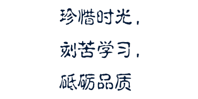

-
2022年8月10日，世界5G大会在哈尔滨市开幕。大会以会、展、赛、投资洽谈等形式呈现5G产业的技术进步和产品创新，并邀请通信领域知名专家学者共同探讨5G国际合作、技术前瞻、数字产业、5G+行业应用等多个话题。
-
- 中欧班列沿线国家
2022年8月1日，一趟满载汽车零部件的中欧班列从长春兴隆铁路口岸缓缓驶出。这是吉林省首趟中欧班列汽车零部件专列，此行运载货值约1543万元，总运行里程1.04万公里，将于26天后抵达德国纽伦堡车站。 -
-
数据来源：2011-2022年辽宁省环境状况公报
2022年8月18日，中共辽宁省委宣传部召开“辽宁这十年”主题系列新闻发布会。会议指出，2012—2021年，辽宁省各级财政累计投入约1575亿元用于生态环境保护，推进生态文明建设和生态环境保护取得了新进展新成效。
奋力书写新时代东北振兴的崭新篇章，我想说:

- 
正在生成...
奋力书写新时代东北振兴的崭新篇章，我想说:
loading...